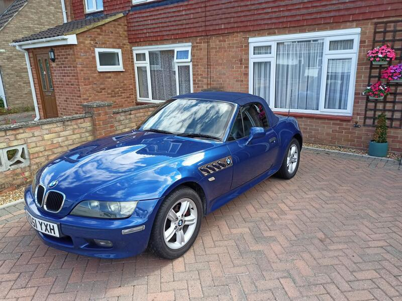
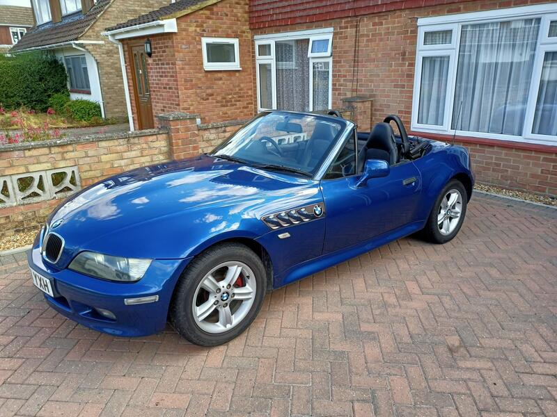
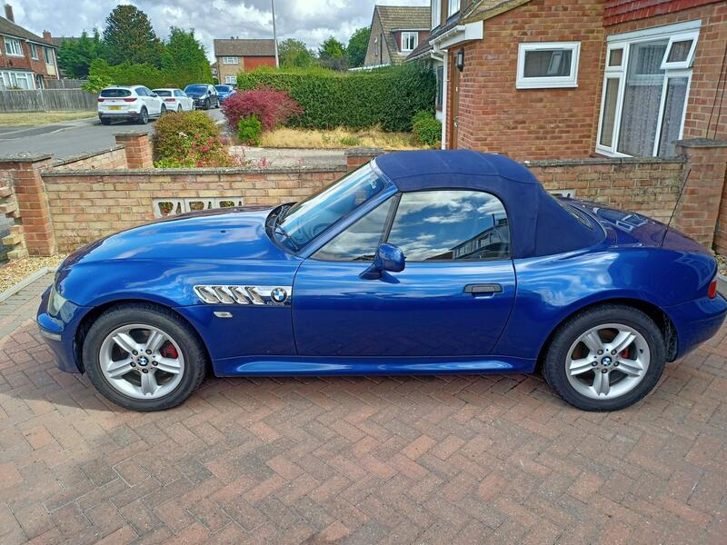
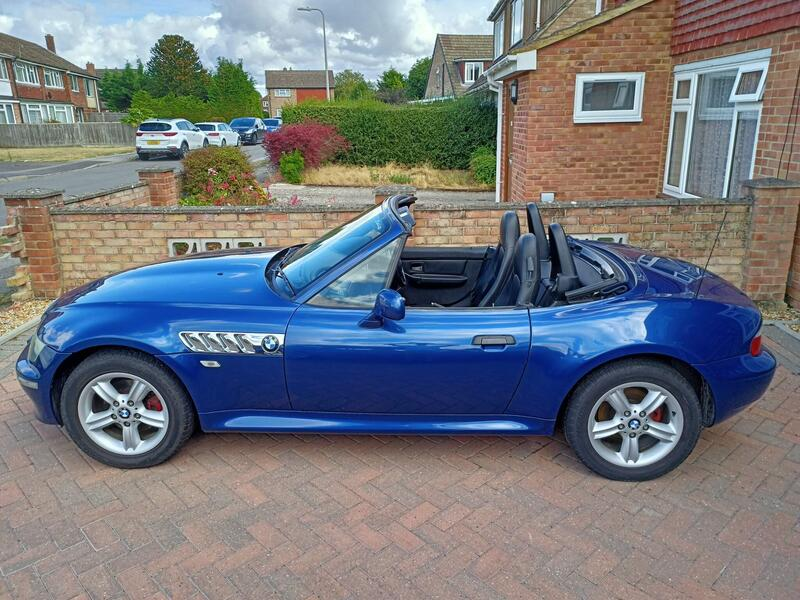

Seller photos from the AutoTrader ad.
BMW Z3 1.9i Petrol Manual
A well-presented private Z3. Earlier find.
Key facts
| Price | £2,950 |
|---|---|
| Year | 2001 |
| Miles | 114,000 |
| Model | BMW Z3 1.9i Petrol Manual |
| Colour | Blue |
| Registration | 2001 (51 reg) |
| Owners | 8 owners |
| Service history | Not stated |
| MOT | New MOT (ad) |
| Seller | Private |
| Location | Thatcham |
| From GU7 | 32 mi (AutoTrader) |
| Checked | 13 Oct 2026 |
Why buy it
- Facelift 1.9i in Topaz Blue
- New MOT, battery and oil (ad)
Things to check
114k miles
- BMW Z3 1.9 weak spots
'Not as much of a rust trap as a contemporary MX5 or MG TF'; check arches, sills, rear suspension mounts, boot floor. Simple and robust; cooling plastics – an overheat can turn a pump job into a head gasket; timing-chain rattle, oil leaks.
Seller says (extract)
“2001 BMW Z3 1.9i (Facelift model) - Stunning Topaz Blue - Modern Classic For sale is my 2001 BMW Z3 1.9i Roadster. This is the desirable post-facelift model in striking Metallic Topaz Blue. Just had new MOT, Battery, Oil and Filter change. Has BMW 6CD changer in boot. Starts and runs beautifully. Only selling as I will be working abroad for the next couple of years. When I bought the car I looked at lots and this one was miles better than any others I looked at for the price. Its been reliable and well looked after.…”